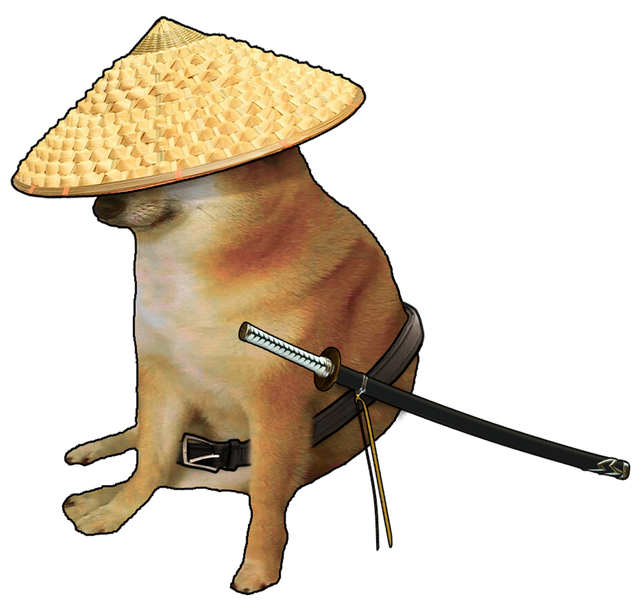

Hola usuario, bienvenido a Meago (pronúncialo en inglés >:v), aquí podras cuidar y entrenar a tu propia mascota virtual, el cual es... *redoble de tambor*
 Cheems samurai :D ¿Qué acaso no está bonito? Tú serás su Sensei >:D Él a pasado toda su vida esperando su momento para entrenar y vencer al mal y a la ansiedad. Y un día llegaste tú :D. Un ser del mundo físico que quiere ayudar a este samurai digital.
Algunas de las cosas que puedes hacer en este espacio virtual son:
Pero, ¡asegúrate que Cheems samurai no muera! Nisiquiera las mascotas virtuales se salvan de la muerte D:
Asique cuando lo veas con poca vida, déjalo descansar un poco, o usa algún objeto mágico para sanarlo
¿No sabes cuales son los enemigos que te puedes encontrar cuando explores?
¡Revisa la lista!